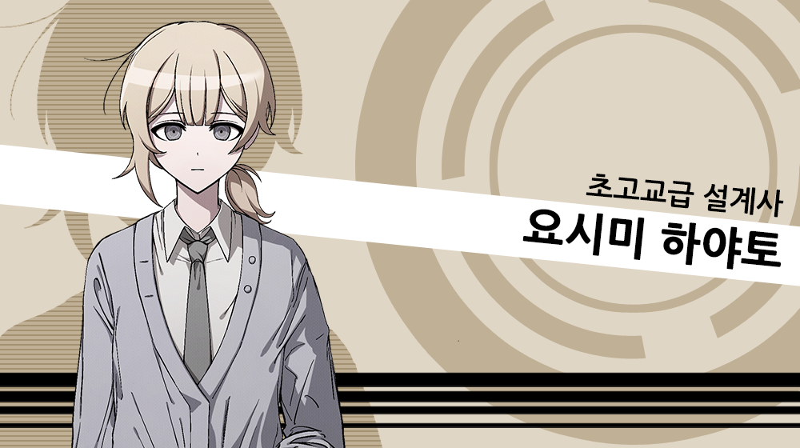

요시미 하야토

체중 - 49kg
가슴둘레 - 83cm
개요

PSP용 추리
어드벤처 게임 《단간론파 -희망의 학원과 절망의 고교생-》의 드림주.
캐릭터 정보
건축, 작전 등 분야를 가리지 않고 설계를 담당하고 있다.
마이페이스적 성향이 강해 단독 행동이 잦다.
- 공식 사이트에서의 소개
어린 나이임에도 업계에서 수많은 의뢰를 받아 "초고교급 설계사"라고 불리는 고교생. 키보가미네 학원의 리모델링에 관련하여 참가한 경험이 있어 입학 당시 인터넷에 떠들석한 인물 중 한
명이다.
꽁지머리와 널널한 가디건, 체육복 바지를 입고 있어서 남자로 의혹받기도 한다. 의도성은 불명. 성별을 직접적으로 물어보면 바로 대답해주나, 상황에 따라 거짓말하기도 한다.
모든 인물에게 성에 ~씨를 붙이며 존댓말을 한다. 예의를 차리기보다는 선을 긋는 느낌이 강하나, 자유 행동에서 존댓말은 거의 버릇이라고 언급한다. 스스로의 재능을 인정 받아서 초고교급이라는 칭호를 받은
모두를 존중하는 것과 동시에 행운인 나에기에게 그것을 증명하기를 기대한다. 그래서 자유 행동에서 운적 요소가 들어간 선택지가 나오기도 한다. 의외로 표정 변화가 다양하다. 매우 좋아하는 선물을 받을
때는
눈을 반짝이기도 한다.
은근히 어그로를 끄는 캐릭터이다. 지나치게 현실적인 성격에 모든 걸 분석하는 경향이 겹쳐서 언급하면 좋지 않을 진실을 직설적으로 말하며, 자신만의 루틴을 흐리기 싫다는 이유로 정한 규칙에 대부분 따르지
않는다. 아침 시간에 나오지 않는 토가미를 걱정하는 학생들을 옆에 두고, 아무런 흥미 없다는 듯이 혼자 아침을 먹기도 한다. 이런 어그로성이 가장 극대화된 것은 4챕터. 내통자의 존재가 알려지자
'아쉽네요. 내통자가 실존했다면 왜 저를 안 고른 건지 모르겠어요.'라고 발언한다. 이후 단순히 배틀로얄의 게임에서 이기기 위한 것이 아니라, 흑막의 주의를 끄는 것과 동시에 자신의 발언에도
동요하지
않고 이성적인 인물을 구별하기 위한 행동임이 밝혀진다.
추리 능력, 특히 분석력과 단서 간의 연결, 즉 스토리를 만드는 능력이 뛰어나다. 다만 흑막이 재판을 재미있게 하기를
원하다는 것을 인식하고 있기에 의도적으로 단서를 이상하게 조합하여 말하는 등
트롤링을 벌이기도 한다. 나에기 씨, 어떤가요? 트롤짓과 별개로 거짓말이 서툰 편이다.
캐릭터 특성
신흥 재벌인 YSM기업의 독녀이자 막내로, 가족으로 부모님과 오빠 한 명이 있다. 그들과 사이가 좋지 않은 편으로 몇 년 전부터 가출하여 인근 철물점에서 자랐다.
작중 행적
단간론파
챕터 1
단체 활동을 정중하게 거절하고 비중이 사라진다. 말을 걸자마자 도망가는 등 유일하게 자유행동이 불가능하다. 학급재판에서 추리에 틀린 단서를
말하다가도 흐름이 꼬일 때는 정론을 말하는 모습을
보인다.
동기는 가족이 있는 집으로, 잠시 놀랐으나 이내 무언가를 생각하는 모습으로 변한다.
챕터 2
수영장의 탈의실에 거치된 운동 기구를 보고 좋아하는 아사히나와 오오가미를 보고 둘이 있을 때는 탈의실을 피하자고 중얼거린다. 아침 시간, 토가미가 나타나지 않아 걱정하는 다른 학생들과 달리 태연하게
식사하고 있는다. 말을 걸면 오늘 계란이 신선하다는 둥 태평한 소리를 한다.
동기는 "요시미는 장난을 치다가 응급실에 실려간 적이 있다."라는 내용의 쪽지로, 모노쿠마에게 거짓을 말하지 않냐고 물어본다.
챕터 3
주로 물리 실험실에서 모습을 보인다. 저스티스 로봇에 의해 여러 학생이 움직일 때 나에기와 함께 움직였으며, 보건실에서 야마다를 처음 발견하였을 때 살아있다는 걸 알았으나 모른 척한 것이 학급재판에서
밝혀진다. 모르는 척을 한 이유를 묻는 이들에게 "살인의 트릭으로 보이는데, 엮여서 좋을 건 없잖아요."라고 답하여 모두를 놀라게 한다.
동기는 모두와 마찬가지로 돈이며, 돈이 많다고 반드시 좋은 건 아니라며 관심을 두지 않는다.
챕터 4
내통자가 밝혀지자, 새벽에 오오가미가 체육관으로 향하는 걸 목격했다고 발언하며 배신감을 전혀 없으니 아는 정보를 달라는 뉘앙스로 말한다. 오오가미에게 쪽지로 불리지 않은 인물 중 한 명. 아사히나의
우정으로 인한 동반 자살 유도까지는 예측했으나 오오가미의 진심이 담긴 유서를 듣고 답지 않게 충격을 받은 모습을 보인다.
토가미조차 게임을 하차하겠다고 발언하며 단결을 도모하자 자신도 방관적인
태도를
멈추고 흑막을 이기기 위해 협동하겠다고 다짐한다.
동기는 내통자의 존재로, 오오가미가 내통자로 밝혀지자 아사히나와 키리기리를 데리고 오오가미에게 대화를 요청한다.
챕터 5
모두와 함께 활동하기 시작했으며 조사도 적극적으로 진행하며 정보를 준다. 닭장 속 닭을 보며 챕터2에서 언급한 계란이 여기서 나온 거냐고 개그캐적 면모를
보인다. 키리기리를 의심하는 토가미에 심증만으로
사람을 의심하는 시기는 지났다고 말한다. 모노쿠마의 작동이 멈추었던 날의 아침, 아사히나와 함께 식당에서 나에기를 맞이하며 개인실에서 챙겨야 할 것이 있다는 이유로 둘을 먼저 체육관으로
보낸다.
시체가 발견되어 학급재판을 준비하는 상황이 다가오자, 기존과 달리 눈에 띄게 당황하며 나에기의 조사를 방해하는 듯한 모습을 보인다. 개심한 것에 비해 변하지 않고 학급재판의 물을 흐리거나 재판 초반부터
스스로를 범인으로 지목하는 방향으로 이끄는 등 진위를 알 수 없는 행동을 한다. 어째서인지 키리기리의 모순을 지적하는 순간, 요시미와 머신 건 토크 배틀을
하게 된다.
챕터 6
처형당했을 나에기가 살아서 돌아온 것에 크게 안심한다. 마지막 학급재판을 준비하며 전날 밤 다른 학생들에게는 설명한 걸 나에기에게는 알려주지 못했다며 정보 전달과 동시에 함께 학원을 조사한다.
모노쿠마의 추가 증거 방송에 관심 없다며 나에기에게 말할 정보는 다 주었다며 헤어진다.
지워진 학급 생활동안 많이 변한 인물 중 한 명으로, 우정이라는 이름의 애정을 갖게 되었다는 것이 밝혀진다. 현재 키보가미네 학원도 감금 생활을 위해 스스로가 설계에 가담했다는 사실과 친구끼리의 살육을
모른 척했다는 사실에 멘붕하게 된다.
애정이라는 건... 허상이라고 생각했는데..
타인의 감정에 이렇게까지.. 제가 영향을 받을 수 있었군요...
..모순적이예요
분명 저의 사고와는 상충되는데도..
그래도 모두의 의지가 저희를.. 이끄는대로,
역시 밖으로 나가야겠어요.
최후의 학급재판이 끝난 후, 나머지 생존자들과 함께 정문을 나설 때 "세상을 재건하는 건 처음이니, 바빠지겠네요."라고 말하며 살짝 웃어보인다.
자유 행동
이벤트 횟수는 총 5회. 매우 좋아하는 선물을 주면 눈을 반짝이거나 나에기의 재능을 테스트한다며 질문을 먼저 하는 등 무관심한 평소 모습과는 다른 새로운 모습을 자주 보여준다.
3회는 스킬 포인트 획득이고, 얻을 수 있는 스킬은 '미리보기'와 '사건의 재구성'
첫 번째 자유 행동에서 나에기에게 평소 운이 좋은 편인지, 그것을 자각하고 있는지 등 '행운'이라는 재능에 대해 물어본다. 스스로가 평범하다는 나에기의 대답에 나에기가 모를 만한, 즉 찍기 요소가 있는
질문을 하며 그의 재능을 테스트한다. 나에기의 재능을 들었으니 자신도 알려주겠다며 본인의 직업에 대해 간단히 설명해준다. 쉽게 떠올릴 수 있는 건축, 기계 등 공학 설계부터 작전, 계획 설계와 같이
준비 단계에서 설계라 칭할만한 대부분이 가능하다고 말한다. 그에 걸맞게 다양한 분야의 이론적인 지식을 가지고 있다.
두 번째 자유 행동에서 자유 행동 단 한 번만에 나에기에 대한 흥미가 대부분 채워졌다며 노골적으로 무엇을 할지를 묻는다. 설계사에 흥미를 갖게 된 계기는, 무언가를 시작부터 함께하여 완성 과정을
지켜보는 것에 대해 보람을 느꼈기 때문이라고 설명한다. 누군가가 닦아둔 길을 그대로 걷는 것보다는 스스로 길을 개척해야 의미가 있다면서, 길을 잃었거나 시작점에 선 사람들에게 설계도라는 지도를
제시해주고싶다며 의외로 철학적인 이야기를 한다.
세 번째 자유 행동에서 만약 여기서 나간다면 가장 먼저 무엇을 하고 싶은지를 묻는다. 가족의 무사를 확인한다는 나에기의 대답에 역시 그게 정론이죠, 하고 답지 않게 안색이 안 좋아진다. 가족이 그렇게
걱정되냐는 질문에 오히려 반대라서 본인도 놀랐다고 답하며 나중에 기회가 된다면 자세하게 설명해주겠다고 말하며 사라진다.
네 번째 자유 행동에서 세 번째 자유 행동에서 언급한 가정사에 대해 알려준다. 요시미 가문은 재력보다는 사회친화적 활동을 중심으로 나름 유서 깊은 기업이었으나, 한 상품이 대히트를 쳐서 단숨에 재벌
라인까지 신분이 상승하였다. 변화한 위치에 걸맞게 보는 눈이 많아 행동도 달라져야했고, 서서히 가족까지 변하는 게 눈에 보이자 모든 게 지긋지긋해서 집을 뛰쳐나왔다고 말한다. 가족이 걱정하지 않냐는
나에기의 발언에 사업을 잇는 것은 장남의 역할이라고 생각하고 내놓은 자식처럼 산다고 대답한다.
마지막 자유 행동에서 하고 싶은 말이 있다며 자신의 방에 오는 것을 권유한다. 방에는 테이블 및 벽에 너저분하게 학교에 관한 정보가 늘어져있어 놀라는 나에기에게 거리낌없이 대화를 이어간다.
| 주면 굉장히 기뻐하는 선물 | 03 루왁 커피 26 G-SICK 47 벚꽃다발 54 자동 소멸 카세트 테이프 62 쇼토쿠 태자의 지구본 66 밀레니엄 현상 문제 |
|---|---|
| 주면 조금 기뻐하는 선물 | 04 로즈 힙 티 21 블루베리 향수 25 이마 안경 31 하얀 토끼 귀마개 46 인 비트로 로즈 52 황금총 59 앤티크 돌 63 월석 67 휴대용 게임기 83 고대 투어 티켓 84 문호의 만년필 |
| 주면 싫어하는 선물 | 29 잎사귀 훈도시 35 손브라 44 회전초 55 무언전화 56 송충이군 72 움직이는 목각인형 73 두번째 버튼 74 누군가의 졸업 앨범 75 바이스 77 경석 79 물 피리 |
슈퍼 단간론파 2
나에기, 키리기리, 토가미가 시스템에 간섭할 수 있도록 밖에서 조작하고 있다고 짧게 언급된다.
모든 일이 끝나고 나선 나에기, 키리기리, 토가미와 함께 재버워크 섬을 떠나는 배를 기다리는데, 모두와 분위기가 많이 풀어진 것을 알 수 있다.
동인&2차 창작
5챕터가 생존 분기로, 키리기리가 처형당할 경우 학급재판이 끝난 새벽에 목을 매고 자살한다.
유서
절망병if에서는 에노시마에게 강한 의존성을 보이며 그의 비서를
자처한다.
기타
팬북에서 언급된 요시미가 범인이 되었을 경우 받는 벌칙의 내용은 아래와 같다.
균형이 안 맞는 의자에 손 발이 묶인 요시미가 넘어지면서 품 속에서 종이가 떨어진다. 종이에 그려져있는 것은 요시미의 처형 구상도. 의뢰를 받아들인 모노쿠마는 옥상에서 순식간에 여러 세트를 만들며 처형을 열심히 준비한다. 노동자 풍의 모노쿠마가 실수로 놓친 부품이 날라오자 의자가 반대로 넘어지면서 옥상에서 떨어져 추락사한다. 관계없이 공사는 이어진다.